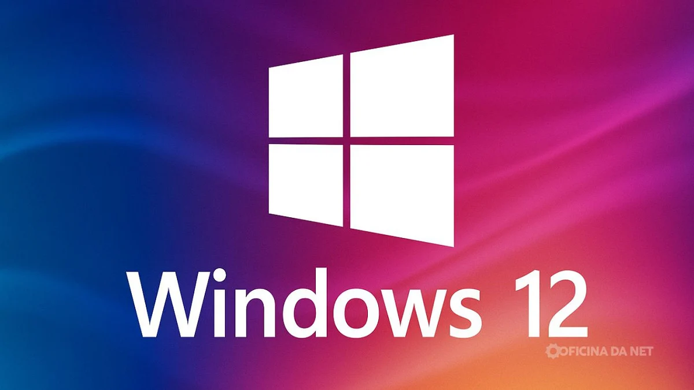

Nova versão do sistema operacional lançada
A nova versão do sistema operacional foi lançada hoje, trazendo melhorias de desempenho e novas funcionalidades para os usuários.

Leia a matéria completa
A nova versão do sistema operacional foi lançada hoje, trazendo melhorias de desempenho e novas funcionalidades para os usuários.

Aprenda a versionar seu código de forma profissional no laboratório.

A nova versão do sistema operacional foi lançada hoje, trazendo melhorias de desempenho e novas funcionalidades para os usuários.
Aprenda a versionar seu código de forma profissional no laboratório.